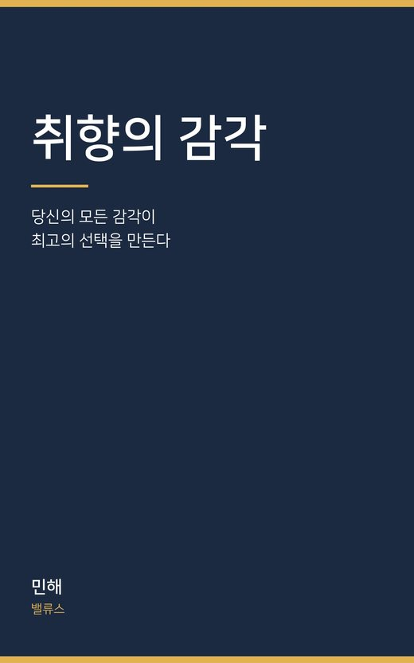

취향의 감각
당신의 모든 감각이 최고의 선택을 만든다
장바구니에 마흔일곱 개를 담아 두고 하나도 못 사는 당신에게. 남의 별점이 아니라 내 몸으로 고르는 법.
더 읽어보기
서윤은 온라인 쇼핑몰의 MD입니다. 고르는 일이 직업인 사람입니다.
그런데 자기 장바구니에는 마흔일곱 개가 담긴 채 한 달이 지났습니다.
별점 4.3과 4.5 사이에서 삼십 분을 보내고, 결국 아무것도 사지 않습니다.
이 책은 「무엇을 좋아할 것인가」에 대한 책이 아닙니다.
「어떻게 알아볼 것인가」에 대한 책입니다.
보고, 듣고, 만지고, 맡고, 맛보고, 그리고 두 시간 뒤 몸에게 다시 묻는 것.
이름표를 다 떼고도 남는 것이 무엇인지 알아보는 연습.
서윤이 일 년 동안 그 연습을 하는 이야기와, 당신이 따라 할 수 있는 훈련이
번갈아 놓여 있습니다.
일 년 뒤 서윤은 같은 자리에서 같은 질문을 받고 이렇게 답합니다.
「뭘 좋아하는지는 아직 잘 몰라. 그런데 뭐가 나한테 맞는지는 조금 알아.
그건 달라. 좋아하는 건 머리가 정하는 건데, 맞는 건 몸이 알려 주더라.」
· 25만 자 · 소설과 훈련이 섞인 책
· 8장은 서른 날 동안 혀를 되돌리는 훈련입니다
· 지병이 있거나 약을 드시는 분은 식단을 바꾸기 전에 의사와 상의해 주세요
9,900원 · 약 $7.9